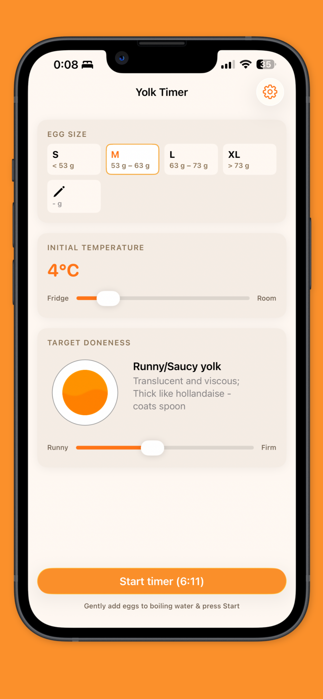
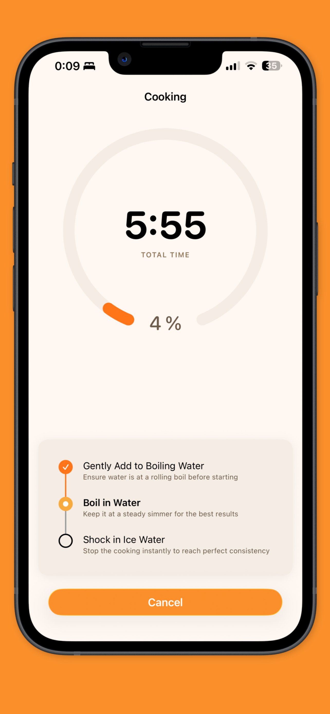
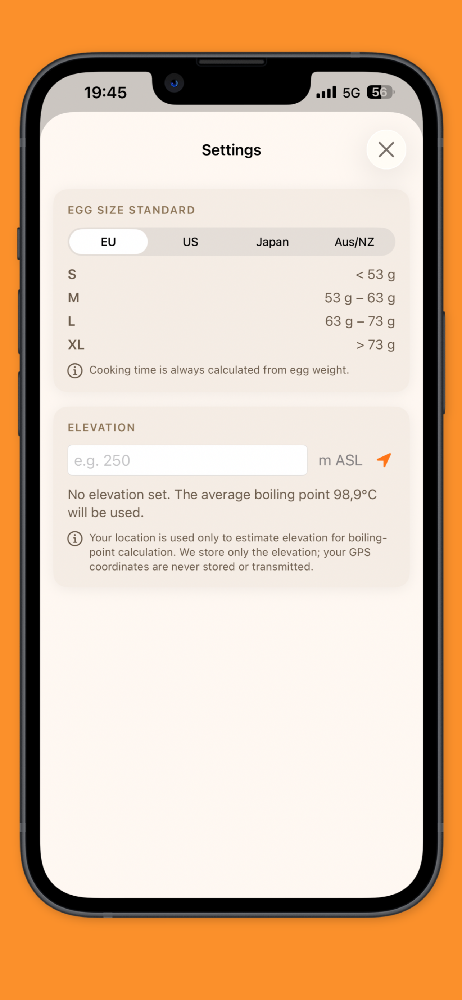

Yolk Timer
Perfect eggs. Every time.
From jammy ramen eggs to perfectly hard-boiled eggs, Yolk Timer helps you get consistent results without the guesswork.
Screenshots



About
Yolk Timer started as a small project for my own kitchen. The goal was simple: create an egg timer that feels trustworthy, gets out of the way and delivers consistent results. Along the way it also became an experiment in building an app almost entirely with AI—from the first idea to the App Store.
Download
Yolk Timer will be available shortly as an app for iPhone. More details and release information will be shared here when available.
Back to homepage →